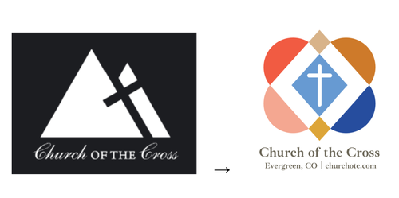

Bringing Our Kingdom Concept To Life
Our new logo — four interlocking hearts surrounding a central cross — represents the unity and love at the heart of everything we do. Together with a refreshed website, updated business cards, and a new statement of faith, we're putting our Kingdom Concept into visible, tangible form. Did you know that 94% of first impressions of a church are formed online?
Read More